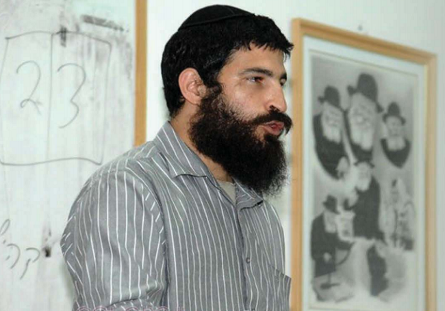

במבט בוגר של היום - איזה סוג ילד היית, מה שמוגדר היום ‘עם פוטנציאל נשירה’?
“למרות שאני עדיין מוגדר דיסלקט ודיסגרף, אבל אני קורא וכותב, יש לי חברים, יש לי השפעה. התפילה שלי התקבלה. רק שהרבי הבין שכדי שצריך ‘לבשל’ אותי עוד קצת, כדי שהתבשיל יצא טוב יותר ומשובח יותר - ועל כך אני מודה לרבי ומודה לקב”ה על כל דבר ודבר שעברתי בחיי”
“למרות שאני עדיין מוגדר דיסלקט ודיסגרף, אבל אני קורא וכותב, יש לי חברים, יש לי השפעה. התפילה שלי התקבלה. רק שהרבי הבין שכדי שצריך ‘לבשל’ אותי עוד קצת, כדי שהתבשיל יצא טוב יותר ומשובח יותר - ועל כך אני מודה לרבי ומודה לקב”ה על כל דבר ודבר שעברתי בחיי”

היום הראשון ללימודים. יוסף חיים קם מוקדם, מרוגש. ‘היום זה היום שלך’, הוא חושב לעצמו. מכתף את הילקוט וצועד לכיתה בהתרגשות, להגיע לפני כולם, לבחור מקום בקדמת הכיתה. להתחיל דף חדש. להיות ילד שאוהב את הלימודים, שמצליח בלימודים, ילד אהוב.
זמן קצר לפני השעה שמונה, יוסף חיים יצא לשירותים. להיות הכי מוכן שיש, שהוא אפילו לא יצטרך להצביע בשביל דברים שלא קשורים ישירות לשיעור. כשחזר, גילה לתדהמתו שהילקוט שלו איננו. ילדים מכיתתו, זרקו לו את תיק למטה, לחצר.
כאוב, פגוע, מבוייש ירד בשקט למטה והביא את התיק. מוכן לבלוע את העלבון, העיקר שהשנה תתחיל כמו שצריך, שהוא יהיה ילד רגיל, כמו כולם.
כשהוא חזר, המורה כבר המתין בכיתה. “למה איחרת?!”, שאל המורה. הוא עמד לספר על ההגעה המוקדמת, תפיסת המקום, התיק. אבל המורה לא אפשר לו להמשיך בסיפור. הוא קטע אותו וקבע: “זה לא משנה. תלך למקום - בסוף הכיתה”.
הילד מחפש משמעות
בעמדנו בערב חג הפסח, שמסמל את החירות אבל גם את המרור, את השעבוד ואת הגאולה - ביקשתי מיוסף חיים בולטון, כיום מאמן אישי מצליח שמסייע לנוער שמשום–מה מכונה ‘נושר’, לחזור לרגעי המשבר והצמיחה. ולנסות ללמוד מהם, לקבל כוחות. תכינו ממחטות.
במבט בוגר של היום - איזה סוג ילד היית, מה שמוגדר היום ‘עם פוטנציאל נשירה’?
“בעיני אנשי הכפר נתפסתי בתור ‘הילד הבעייתי’. אם אתה שואל אותי מה הייתי באמת, הייתי ילד משועמם. חסר משמעות. בעיני עצמי ובעיני החברה”. כשאני מבקש מיוסף חיים להגדיר את המושג ‘חסר משמעות’, הוא מתקשה לצאת מתפקידו היום, בעבודתו עם נוער מתמודד. כואב לו לראות שהורים ומורים לא מבינים את הקריטיות הזו לחיים של הילד, שהוא ירגיש בעל משמעות, שהוא משמעותי.
“זו אנלוגיה מאד פשוטה” הוא מסביר, “ילד שהמורה שלו לא חושב שהוא חשוב, מרגיש חסר חשיבות, וילד חסר חשיבות - יעשה הכל כדי להיות חשוב. בכל מחיר”.
למה הרגשת חסר חשיבות?
“כי שאתה לא יודע לקרוא ולא יודע לכתוב, כשאתה לא מסוגל לפתוח ספר וללמוד - ואתה נמצא בבית ספר, אז אתה חסר חשיבות”.
מבחן החיים
כשאני מנסה לעמת אותו בשאלה האם הוא לא מערבב תחושות מול עובדות, הוא לא נשאר חייב ושולף לי רגע מצמרר ממגירת הזיכרונות.
“בסוף כיתה ח’ רציתי ללכת ללמוד בישיבה מסוימת. עבדתי מאד קשה כדי ללמוד את החומר, ישבתי עם המחנך שלי הרב יעקב אצרף ע”ה, שנתן לי את הנשמה. חזרתי על החומר הולך ושוב, וידעתי אותו מה שנקרא ‘ישר והפוך’.
לא אשכח את המבחן הזה, לעולם. ראש הישיבה פתח ספר תהילים ואמר לי: “תקרא”. אמרתי לו את האמת, שאני לא יודע לקרוא. ראש הישיבה הביט בי וחייך, “אז איך אתה רוצה ללמוד גמרא?!” לא נשארתי חייב ואמרתי לו, “נכון, אני לא יודע לקרוא, אבל אני מבין מהר. הרב יכול לבחון אותי על הגמרא”. אבל את הרב זה לא שכנע. ואותי זה שבר. הבנתי שאני ‘חסר משמעות’”.
אני מחליט להיות מראיין לא ידידותי, ושוב אני מעמת אותו בשאלה נוקבת: לדעתך הוא היה צריך לקבל אותך לישיבה בה הלימוד מתוך הגמרא תופס את מרכז היום?
הקול של בולטון רועד, “אתה מבין שיש ילדים שרק רוצים להיות במסגרת? להיות כמו כולם? כשילד מגיע לישיבה - צריך לראות מה שיש בו ולא מה שאין לו. אין ילד בעולם שלא מביא אתו משהו ייחודי, שאין בו משהו מיוחד. ותאמין לי, ראיתי מאות מקרים קיצוניים של ילדים ונערים. נכון, לכל בחור יש קשיים. רק שיש כאלה שיודעים להסתיר טוב יותר ואחרים, שמסתירים פחות טוב..
עת רצון
מה היה מצבך החברתי?
“גרוע מאד”.
אתה רוצה לספר?
“הילדות שלי בעצם, סבבה סביב אלימות. חוויתי הרבה מאד אלימות, פיזית ומילולית. אפשר אפילו לומר שהאלימות היתה מנת חלקי. היא הייתה קיימת בכל מקום: מצד התלמידים, מצד המורים, כן, אלו שאמורים לספק לך הגנה. וגם כשאתה הולך לבית הכנסת או ברחוב. סבבתי אלימות”.
השיחה עם יוסף חיים קולחת ונוגעת בעצבים הכי חשופים, ברגעי המשבר הקשים. המריבות והאלימות הפכו אצלו לשגרת חיים. איך שהוא עם האלימות הוא הסתדר, זרם, התמודד, חשק שינים והמשיך. לחיות ולסבול. אבל הרגע המצמרר הבא - היה רגע מכונן עבורו.
“בז’ בטבת תשמ”ז, יומיים אחרי ‘דידן נצח’, הרבי הכריז על ‘עת רצון’ והציע שיכתבו מה שרוצים והוא יקח את המכתבים אתו לאוהל. הרבי הוסיף, שמי שנמצא בארץ הקודש, יכול ללכת להתפלל במקומות הקדושים בקבר רבי שמעון במירון ובקברי האבות בחברון.
“התרגשתי מאד. ידעתי שזה עת רצון ואני, אני צריך עת רצון, אני צריך שה’ ישמע את תפילתי. היו לי שלוש בקשות, פשוטות מאד. הראשונה: שאדע לקרוא. השניה: שאדע לכתוב. השלישית: שיהיו לי חברים…
“ישבתי וכתבתי מכתב מכל הלב. עם המון שגיאות כתיב, בכתב מאד לא קריא, במאמץ רב. אני זוכר עד היום את הכל לפרטי פרטים. הייתי בהתרגשות מיוחדת, כל כך הייתי בטוח בעת רצון. למחרת קמתי מוקדם, בהתרגשות. סוף סוף יהיו לי חברים. מה כבר ביקשתי לעצמי?!
“אני עומד על יד השער של התלמוד תורה ושלשה תלמידים מגיעים מהשיכונים. ואני בשיא ההתלהבות, בודק את התממשות הנס. אני מברך אותם ב’בוקר טוב’. בתגובה - אני חוטף משלושתם מכות. נשברתי. לא ידעתי איפה לקבור את עצמי, את הבושה שלי, את האמונה שלי. החלטתי שלא להיכנס לתלמוד תורה והלכתי לבית הכנסת המרכזי. פתחתי שם תהילים כדי להתפלל לה’. אני בא לקרוא, ומפנים שאני לא יודע לקרוא, גם לא עם ניקוד…
סיפור נורא. איך הוא משפיע עליך במשך החיים?
“באותו רגע היה לי משבר באמונה. ‘הכל שטויות’, (ר”ל) אמרתי לעצמי. ‘שום דבר לא קורה, שום דבר לא אמיתי. אין טעם בכלום. תעשה מה שמתחשק לך’. משם התחילה בעצם הפריצה של ההתדרדרות הרוחנית שלי”.
הרבי ואני
אתה יודע, הרבה אנשים שמתעסקים עם נוער מתמודד מצביעים על מכנה משותף לכל החב”דניקים, שכולם - למרות כל מה שהם עברו - הם אוהבים את הרבי. כאן אתה מספר על משבר אמונה בקב”ה וברבי. איך חווית את המשבר מול הרבי?
פתאום, בתוך הראיון, נעלמים ליוסף חיים המילים. הוא שוקע במחשבות. לוקח לו זמן להגיב. “אני מנסה למצא את המילים”, הוא אומר בסוף.
“לא מזמן”, הוא מספר, “ישבתי לשיחה עם ר’ משה כהנא, שגם הוא בוגר הת”ת בכפר חב”ד. ניסיתי לחשוב יחד איתו, איך יכול להיות שאף אחד לא כתב לרבי על מצב הילדים שסובלים? איך זה שאף אחד לא כתב עלי? איך זה שאני לא כתבתי לרבי על המצב שלי? (עד לאותו עת רצון).
ומה עניתם לעצמכם?
“בעיניים של היום, למרות שלא רואים את הרבי, ההתקשרות של הנוער לרבי היא חזקה ועוצמתית, קצת קשה להבין את זה, אבל במידה מסוימת תפסנו אז את הרבי בתור ‘גבוה מכל העם’, מרומם. לא דמות שבאמת נגישה לילד מכיתה ו’ בתלמוד תורה”.
היית אצל הרבי?
“בוודאי. הייתי אצל הרבי בחודש החגים בשנים תשנ”ב, תשנ”ג ותשנ”ד. ואתה יודע מה, אני מתבייש לספר שלא ממש הייתי שם בנפשי ובנשמתי. תראה, זה כמובן מורכב מאד. גם מהתפיסה הכללית, איך שתפסתי את עצמי, איך שהתמודדתי מול משבר האמונה והניתוק הרגשי שעשיתי, בלי ציפיות - בלי אכזבות. אין לי מושג איפה הנשמה שלי היתה אז…”
יש לך רגע עם הרבי?
במקום תשובה, יוסף חיים שולח אלי תמונה שלו עם הרבי. אני מתבונן בעיון בתמונה. מולי נער בן 13 וחצי עומד מול הרבי. הוא מביט ברבי, מבט לתוך עיניו הקדושות, והרבי מביט בו במבט, ישיר, אל תוך העיניים שלו.
רגע מדהים. מרגש רק לראות את התמונה. מה פעל עליך אותו רגע?
“מצד אחד כלום, מצד שני הכל”.
תסביר.
“אספר לך רגע נוסף, שיסביר לך. בערב יום כיפור תשנ”ד אני יוצא מהסבאווי מול 770. עם סוודר על הכתפיים, בלי כובע וחליפה. אני רואה תור של בחורים מחכים ליד 770, כדי לעבור מול הרבי. התלבטתי האם לעבור או לא; הרגשתי שזה רגע שאסור לי להחמיץ אותו, והצטרפתי לתור. חברים גערו בי, ‘מה זה, ככה אתה עובר ליד הרבי?!’ עניתי להם: ‘נראה לכם שהכובע והחליפה יצליחו להסתיר אותי? את מי שאני’? כולנו עברנו וגם אני. ראינו את הרבי לרגע. וזהו. בכנות, באותם רגעים זה לא עשה לי כלום, וסליחה שאני הורס לך את הסיפור…”
אמרת שבאותם רגעים זה לא פעל עליך. מצד שני, אתה צמוד לתמונה שלך עם הרבי כל הזמן.
“ברור. היום אני שואב אין ספור כוחות מהתמונה עם הרבי. מהרבי, ממכתבים של הרבי.
“לימים, כשהתחלתי לעבד נתונים, להפנים, להבין שכל תחנות החיים הם חלק מהמסלול הכי טוב עבורי, שהקב”ה סלל עבורי. הצלחתי לחזור אל אותו רגע עם המכתב לרבי - בז’ טבת תשמ”ז, לאסוף את הכאב ולצמוח ממנו. לשמחתי ולמזלי יש לי רגעים - כמו אותו רגע בתמונה עם הרבי - שאני יכול לחזור אליהם ולשאוב כוחות”.
רגע מכונן על השובר גלים
בא נשחזר את המסלול בחזרה הביתה. אתה יכול להצביע על רגע שגרם לך לחזור?
“זה תהליך מאד ארוך ומלא שלבים, שבאמת ממשיך כל רגע. ובתוך הרגעים של העליה - יש גם ירידות, וברגעי הירידות - רגעי עליות. חיים דינאמיים. אני יכול לומר ששלב אחד במסלול היה כשאמרתי לעצמי, די, מספיק, אתה לא חוטף יותר מכות. וכדי לא להיות נער שחוטף מכות, אני אחטיף. וכך, כדי לא להיות ילד שסובל - אני הופך להיות ילד אלים. אתה מבין שבטבע - החזק שורד. דגלתי אז בשיטה של ‘תמות נפשי עם פלישתים’. אם לי אין מה להפסיד - אז גם אתה תפסיד. הגעתי לדיוטה תחתונה שאני לא מאחל לאף אחד בעולם”.
מה המסר שאתה בוחר להעביר מאותו שלב?
“הורים ומורים חייבים לדעת נתון כפול. ראשית, ילד אלים - בעצם מגן על עצמו כי הוא חווה אלימות ממישהו חזק ממנו, אז הוא משליך את התסכול שלו על החזק ממנו - מול החלש ממנו. שנית, ילד חייב לקבל הגנה. מורה או הורה שלא מספקים לילדים שלהם הגנה וביטחון, עלולים לטפח במו ידם ילדים אלימים במקרה הטוב, וילדים מרוקנים וחסרי משמעות במקרה הגרוע יותר”.
מה קורה שאתה פתאום מחליט לחזור?
“היתה תקופה בה הסתובבתי בכפר חב”ד עם כיפה, לא בכדי לכבד, אלא מפחד מהתגובות. לא שמרתי כלום, וחייתי בתל אביב, טבריה ובאילת.
“אני יכול לספר לך שמבחינה חומרית לא חסר לי כלום. לא כסף, לא חברה והערכה מצד הסובבים אותי ולא כוח. אבל דוקא אז, בתקופת רוגע, אני מוצא את עצמי מתעורר בשבת אחר הצהרים בדירה בתל אביב, נער בן פחות מ–18 ואני חושב לעצמי ‘אוקי. איך מתקדמים מכאן’? לאן אני רוצה להגיע? מהן השאיפות שלי בחיים?
“פסעתי אל חוף הים, ישבתי על השובר–גלים וחשבתי עד שצפה בי תובנה שכנראה הקב”ה קיים, בעולם ובתוכי פנימה, בין אם אני ארצה או לא ארצה. השאלה היא האם אני מוכן להאמין בו או לא? המשמעות של להאמין בו - הוא לדעת שעמו אנוכי בצרה, שהוא נמצא איתי ואני מאמין לו, וסומך עליו, ובטוח בו - בכל רגע ובכל שלב בחיים.
“בחרתי לבחור בו, ובנקודה הזאת החלה צעידה איטית מאד במעלה הסולם”.
במבט לאחור, לו היה זה בידים שלך לבחור מסלול אחר לחיים שלך, איזה מסלול היית בוחר?
“את המסלול שעברתי, בדיוק”.
למה?!
“תקשיב. כשהבן שלי מענדול [לר’ יוסף חיים ורעייתו ברכה שני ילדים עם cp - שיתוק מוחין. הבכור הוא מנחם מענדל, הוא כפי שנקרא בחיבה בפי כל: “מענדול”, והשני שלמה דוד חי - מ.ע.] למד בתלמוד תורה בכפר חב”ד, היה לי מאד קשה להיכנס לחצר של התלמוד תורה. שתבין, אני כבר בוגר, לא ילד קטן. אני כבר אבא. אבל תחושות הן משהו שחזק ממך. היה לי קשה לעמוד בחצר, היה לי קשה לעמוד בפתח של המשרד של המנהל, היה לי קשה להיכנס למשרד. כל פסיעה החזירה אותי ליוסף חיים בולטון, הילד. הייתי עם אשתי, ועל כל משבצת היה לי מה לספר לה, פה היה לי כך וכך עם ההוא, ופה עם ההוא.
“נכון, זה קשה, לא רק בעבר אלא גם בהווה. אני לא מלקק דבש. אני נושך שפתיים בכל פעם מחדש, אבל זה מה שנותן לי כוח. להתמודד היום עם האתגרים שמולם אני עומד. החיים שעברתי נתנו לי עוצמות לעמוד מול אתגרים ולהחליט: אני לא פורש, אני לא מוותר, אני לא מרים ידיים, אני לא מוכן להיכשל”.
תסלח לי על השאלה, אבל אני מנסה להבין. אתה בעצם אומר שהקב”ה נתן לך חיים קשים כילד - כדי שכאשר תתחתן ויוולדו לך ילדים, תוכל להתמודד עם החיים הקשים והאתגרים שהוא יתן לך?!
יוסף חיים נאנח. “תראה, אני לא אשקר לך. ברור שכשמענדול היה ילד ואתה רואה את החברים שלו הולכים ואתה צריך עדיין לסחוב אותו בעגלה, זה קשה.
“הגידול של מענדול היה מאד קשה. אחר כך, כשנולד לנו שלמה דוד חי, מתחשק לך לצעוק בקול גדול. אבל אתה מבין שכל העליות והירידות הם חלק מהדרך, הדרך שלך. הדרך שה’ מבין שהיא הדרך שלך, הדרך הכי טובה להביא אותך, את הילדים שלך, את אשתך אל הייעוד שלכם - אל היעד שלכם.
“תראה, בדיעבד אני מבין שהקב”ה יצר אותי ומכיר אותי הכי טוב. ואני, אני טיפוס שאוהב אתגרים. ככל שהאתגר קשה יותר - אני נהנה יותר. הקב”ה בנה אותי כך שאם יהיו לי חיים בנאליים של עבודה מ–8–4, לא אוכל להתמודד עם החיים. אני צריך חיים מאתגרים. חיים תובעניים, שדורשים ממך ללכת עד הסוף.
“כשמזמינים אותי לדבר מול צוותי חינוך, כשאני נפגש עם משפחות שחוות משברים קשים, כשאני נאלץ להתמודד עם נער שאף אחד לא מאמין בו, אני מבין שהקב”ה נתן לי חיים קשים, כדי לתת לי כוחות על מנת שאוכל להבין ולעזור לאנשים אחרים. זו השליחות שלי בחיים.
“תפיסת העולם שלי היא, כפי שהרבי לימד אותנו שאדם עובר את מה שהוא עובר בחיים, משתי סיבות: האחת, כי הקב”ה יודע שהוא יכול לעמוד בניסיון והוא מקבל כוחות לעמוד בניסיון ובאתגר. השניה, כי הוא יכול לצמוח מזה. בשיחה על חטא העגל הרבי מסביר, שהירידה הכי גדולה בעולם - שבעצם, גם מה שנראה משבר וירידה, הוא חלק מהדרך. אני שמח שקיבלתי מה’ שכל להבין שכל הירידות, המהמורות והפנצ’רים בדרך - הם חלק מהדרך”.
מאמין ומאמן
“תבין”, הוא פונה אלי ישירות, “הקב”ה לא העמיד אותך בניסיונות שה’ העמיד אותי בהם. כי אולי אתה לא היית עומד בהם או שהיית מתרסק מהם. לעומת זאת, גם אותי הקב”ה לא העמיד אותי בניסיונות שלך, כי אולי לא הייתי עומד בהם או שהייתי מתרסק מהם במקום לצמוח. אתה מבין? הקב”ה תופר לכל אחד את החליפה שלו, בדיוק. לטובתו”.
אם נחזור לאותו רגע כואב שמערער לך את האמונה, כשאתה רואה שכביכול התפילה שלך לא מתקבלת. איך אתה מבין אותו היום?
(נחרץ) “חד משמעית, התפילה התקבלה. למרות שאני עדיין מוגדר דיסלקט ודיסגרף, אבל אני קורא וכותב, יש לי חברים, יש לי השפעה. התפילה שלי התקבלה. רק שהרבי הבין שצריך ‘לבשל’ אותי עוד קצת, כדי שהתבשיל יצא טוב יותר ומשובח יותר. כי זו דרך הבישול שהנפש שלי היתה צריכה, בישול איטי. בזכות הקשיים והאתגרים שעברתי הפכתי להיות מאמן אישי, בזכות הקשיים והאתגרים שעברתי, הפכתי להיות מאמין.
“אני אוהב את הקב”ה כי הקב”ה אוהב אותי, והקב”ה אוהב אותי כי אני אוהב את הקב”ה. אני לא אוהב אותו בגלל מה שהוא נותן לי או לא נותן לי, אני אוהב אותו כי הוא מאמין בי. כי הוא סומך עלי. כי הוא מפקיד בידי משימות ואתגרים לא פשוטים. הוא סומך עלי. אני לא יודע איפה אני, איפה אשתי ואיפה מענדול וכל המשפחה שלנו היינו, בלעדי הרבי. שנותן לנו את המבט הנכון לחיים, להבין נכון את הקשר שלנו עם הקב”ה”.
איפה העניין של ‘קבלת פני משיח’ פוגש אותך בעבודתך?
“אני לא מאלו שצועקים ‘יחי’. אני מאמין שהעבודה צריכה להיעשות לא רק להיאמר. מצד שני, נפגשתי פעם עם חבר שלא מחזיק באמונה שהרבי הוא מלך המשיח. שאלתי אותו, ‘תגיד, אם הבן שלך היה צריך לעבור ניתוח, רופא מומחה היה ממליץ על ניתוח ואילו הרבי היה אומר לא לנתח, מה היית עושה?’ הוא כמובן ענה לי שברור שהוא היה מקשיב לרבי.
“תמהתי בפניו - ‘הרי זה מה שאנחנו, חסידים שמצייתים לרבי, גם כשאנחנו לא מבינים. אז איך יתכן שכשיש משהו שלא מסתדר לנו בראש, כמו לדוגמא כשהרבי אומר שנשיא הדור הוא המשיח שבדור, ומשום מה זה לא מסתדר לנו בראש או בעיניים, איך פתאום אנחנו מקשיבים ל’מומחה’ ולא לרבי?’
העיקר, שנהיה קשורים לראש ושנראה עם הרבי תיכף ומיד ממש.